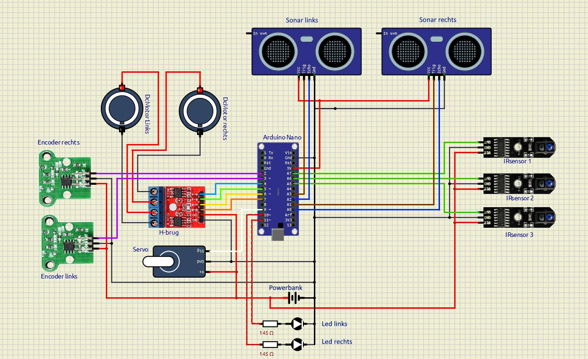
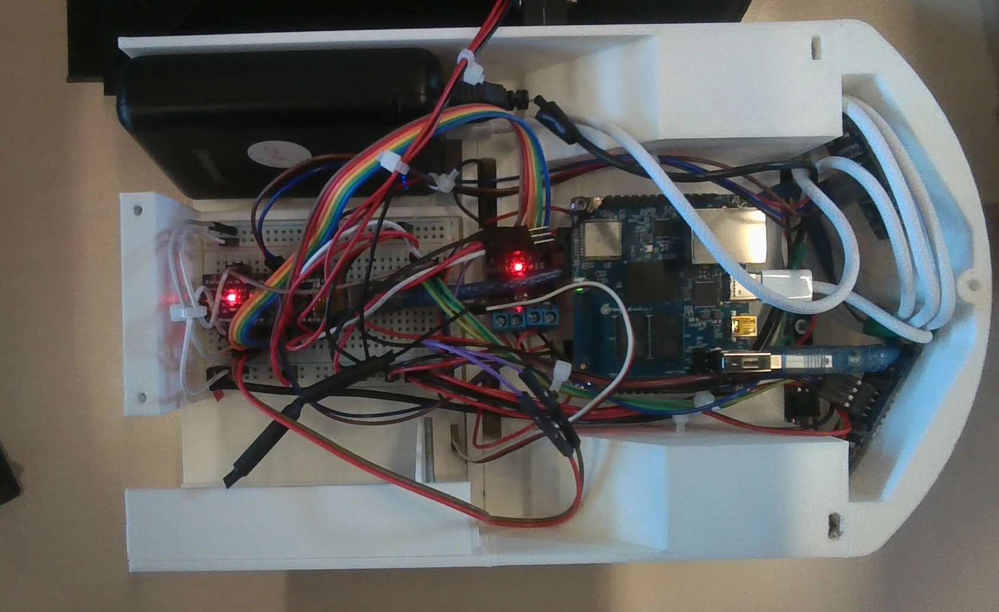

Project robotica
In het project robotica was de opdracht om een robot te ontwerpen en bouwen die 'gevaren' kon detecteren en deze markeren. Ik deed dit project samen met Thomas Berghuis. Het doel was om te leren over electronica en het programmeren van robots. Dit was zonder twijfel het meest frustrerende project op de TU, maar tegelijkertijd erg leerzaam. Het ontwepren van de hardware was het leukste gedeelte, hieronder is in de afbeeldingen te zien hoe alle kabels gekleurd en aangesloten zijn. We hebben gekozen om onze eigen behuizing te maken in plaats van de geleverde plexiglas plaat, met als resultaat de robot die hierboven te zien was. Het programmeren was een grotere uitdaging. De individuele onderdelen werkten wel, maar waren erg onbetrouwbaar. De slechte data die de sensoren leverden maakte het lastig om de robot aan te sturen, en de navigatie bleef een uitdaging. Toch is dit een mooie basis voor een werkende robot die een plek in de 'wall of fame' in het robotica lab heeft verworven.

